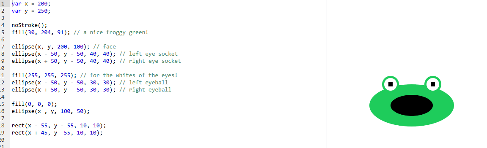

Rana loca
Una cara de rana construida solo con elipses y rectángulos. Las posiciones de los ojos se calculan a partir de las variables x e y, así que mover la rana completa es cambiar solo dos números.
Resultado
Código
Código del proyecto de Khan Academy. En js/rana.js está envuelto en setup() para funcionar con p5.js en una página web.
var x = 200;
var y = 250;
noStroke();
fill(30, 204, 91); // a nice froggy green!
ellipse(x, y, 200, 100); // face
ellipse(x - 50, y - 50, 40, 40); // left eye socket
ellipse(x + 50, y - 50, 40, 40); // right eye socket
fill(255, 255, 255); // for the whites of the eyes!
ellipse(x - 50, y - 50, 30, 30); // left eyeball
ellipse(x + 50, y - 50, 30, 30); // right eyeball
fill(0, 0, 0);
ellipse(x , y, 100, 50);
rect(x - 55, y - 55, 10, 10);
rect(x + 45, y -55, 10, 10);Conceptos que se practican
| Elemento | Qué hace |
|---|---|
var x, var y | Variables que guardan la posición central de la rana. |
noStroke() | Quita el borde de las figuras que se dibujan a continuación. |
fill(r, g, b) | Define el color de relleno con valores de 0 a 255. |
ellipse(x, y, ancho, alto) | Dibuja una elipse centrada en (x, y). |
rect(x, y, ancho, alto) | Dibuja un rectángulo con su esquina superior izquierda en (x, y). |
Orden de dibujo | Lo último que se dibuja queda encima: cuencas verdes, después ojos blancos, después pupilas. |
Captura del editor original
